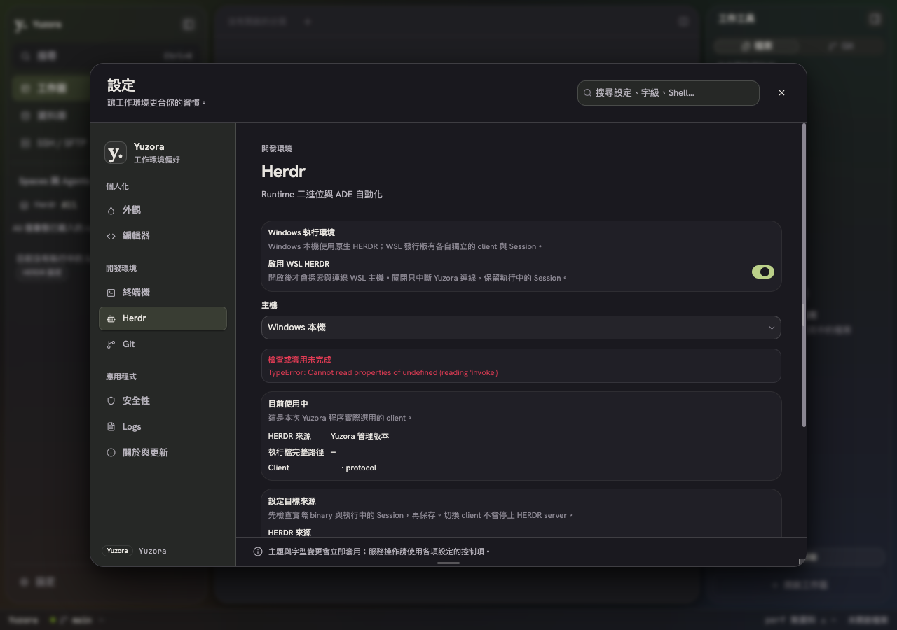
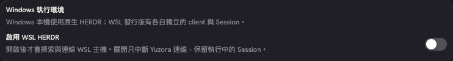
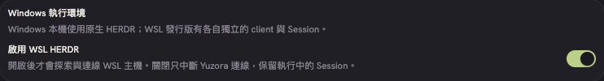
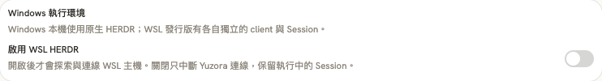
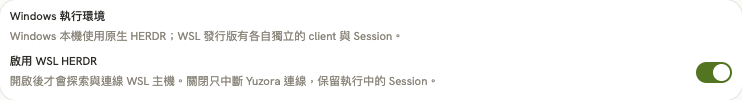
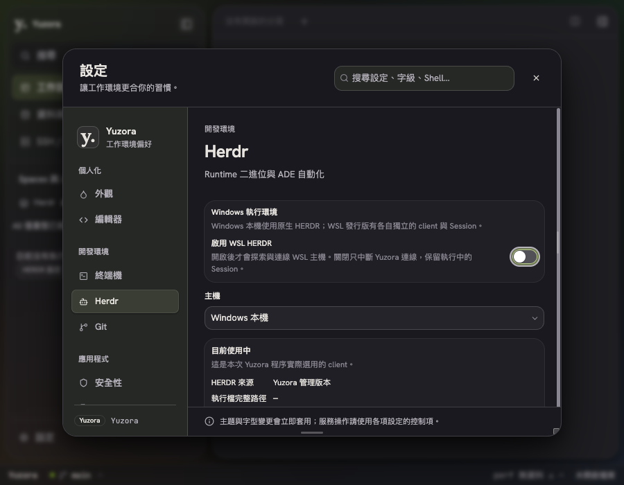

2026-09-09 · Yuzora
HERDR 設定的 WSL 開關原本未套用共用 yz-switch 樣式。軌道使用固定像素，滑鈕卻受全站 13px 根字級縮小，導致啟用時滑鈕距右側仍約 7px。此次只在該 Switch 補上共用 class，沒有更動切換邏輯或周圍版面。
| 項目 | 修正前 | 修正後 |
|---|---|---|
| 軌道尺寸 | 32 × 18.39px | 36 × 21px |
| 滑鈕尺寸 | 13 × 13px | 17 × 17px |
| 啟用時右側留白 | 約 7px | 2px；上下亦為 2px |
| 深色模式配色 | 沿用共用主題：啟用時使用深色滑鈕與主題色軌道。 | |
來源：HerdrSettingsSection.tsx 第 58 行；修正後瀏覽器量測。






視覺驗證在 macOS 的獨立 Chromium 以 Windows user agent 顯示 Windows 控制項；使用實際 React 元件與專案 CSS。此結果驗證前端外觀與切換互動，不代表 Windows／WSL2 原生 runtime 連線驗收。未執行 Git staging、commit 或 push。